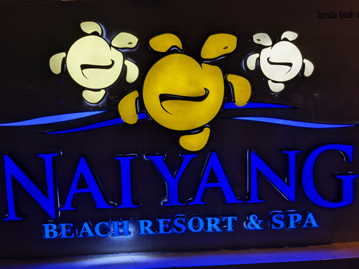
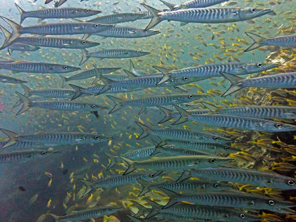
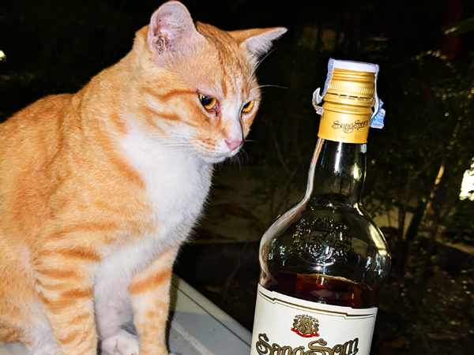

Tuesday 17th February We had an excellent breakfast and spent the rest of the morning at the pool. We had arranged for a late check-out and left the hotel at 12:45. We walked over the bridge to the airport and went through into departures. The Air Asia flight to Phuket was scheduled for 14:45. They announced that it was going to be 20 minutes late but it did not actually take-off until 15:45. We landed at a very wet Phuket just after 17:00.

We had messaged the taxi driver that we had used a couple of weeks ago and he picked us up within about 10 minutes of us getting through the arrivals area. He took us back to Isara Resort where we collected our luggage and then to Nai Yang Beach Resort where we are staying for the next week. We unpacked everything and sorted out our dive gear for tomorrow. We went out and bought a few drinks (also for tomorrow) and then went and bought take-away shrimp fried rice which we ate on the balcony
Wednesday 18th February After the live-aboard we decided that we should do another couple of days diving before going home. Instead of just doing the local dive trips from Nai Yang we wanted to go back to some of the Phuket/Phi-Phi sites again. We have not dived in this area for about 10 years. Doing them from Nai Yang is not ideal as we are the wrong end of Phuket but when we got back into Thailand last week, we booked a couple of three dive day trips anyway. We will dive with Sea Bees again on Friday but today we are with a new operator for us - Aussie Divers.
We were picked up on time at 6:30 and were driven to the Aussie Divers office at Chalong Pier, a journey of about 1 hour 25 minutes. We met our dive guide, Franck and paid for the days diving before walking down to the pier. We were taken by bus along the pier to where we could board the boat. There were quite a few other customers today but the boat was not full and we had Franck to ourselves. After breakfast and a couple of briefings, the first dive was at 9:40 at Koh Doc Mai.
The first dive was not great and we did not see a lot. The conditions were quite rough and the vis was not great but we did see a few nudibranchs which we did not see many of in The Similans.

After an hours surface interval, we were in the water again by 11:40. The second dive was at Anemone Reef and was a lot better than the first. The vis was a lot better and the predicted strong currents never really happened. There were also a phenomenal number of fish all over the dive site. There were several schools of barracuda and as well as all the usual reef fish. By far the best dive of the day.
After a very good lunch, the third dive was at Shark Point. This was better than the first but no-where near the number of fish that we had seen at Anemone Reef. Still an enjoyable enough dive to complete a good days diving.
We were back at the pier before 4:30 and had a reverse of this mornings procedure. By 4:35, we were in the same minibus that we had been in this morning and were on our way back to Nai Yang. Despite the heavy traffic, we were back at the hotel by 6pm. We were both quite impressed with Aussie Divers. Everything was done very efficiently and the fact that we had our own guide was a big bonus. Would happily dive with them again.

After sorting out our gear and showering, it was a typical Nai Yang session. We had a few on the balcony before waking to Rotcharin Seafood. They seem to have started closing at 9pm so we went to Bank Restaurant instead. The food here has been very good this year and we had an enjoyable meal with a couple of bottles of Sang Som. Had a few more on the balcony before bed.
Thursday 19th February We were not feeling too bad this morning despite the amount of Sang Som consumed last night. We went for breakfast which had not changed too much despite the newly modernised restaurant. We then went to Sea Bees to pay for tomorrows trip and to see if they could repair Roz's regs which had developed a fault yesterday. We left teh regs with Maichael and returned to the hotel.